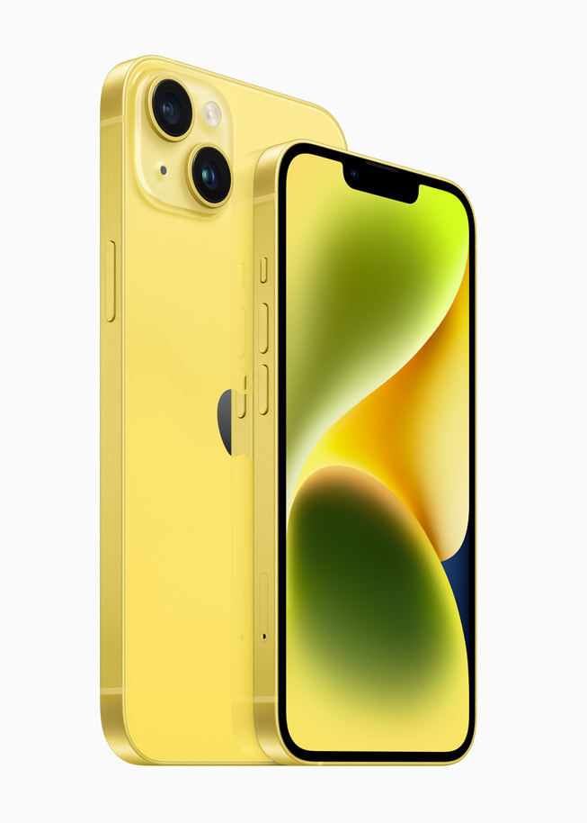

En vakker gul finish er det nyeste tilskuddet til produktserien med imponerende lang batteritid, dobbelt kamerasystem for bilder og videoer i proffklassen og banebrytende sikkerhetsfunksjoner, inkludert Nødanrop (SOS) via satellitt og Registrering av ulykke
En vakker gul finish er det nyeste tilskuddet til produktserien med iPhone 14 og iPhone 14 Plus. CUPERTINO, CALIFORNIA Apple presenterte i dag iPhone 14 og iPhone 14 Plus med en ny gul finish som gir kundene enda flere farger å velge mellom denne våren. I tillegg til å ha et vakkert og slitesterkt design har iPhone 14 og iPhone 14 Plus en solid forside med Ceramic Shield, og innsiden er designet helt på nytt for å muliggjøre høyere vedvarende ytelse og enklere reparasjoner. Den har også en enestående batteritid – iPhone 14 Plus har den lengste batteritiden i en iPhone noensinne.1 Begge modellene har den avanserte A15 Bionic-chipen, et dobbelt kamerasystem som tar imponerende bilder og videoer, og nyskapende sikkerhetsfunksjoner som Nødanrop (SOS) via satellitt og Registrering av ulykke. iPhone 14 og iPhone 14 Plus kan forhåndsbestilles i den nye gule finishen fra og med 10. mars, og de blir tilgjengelige i butikk fra tirsdag 14. mars.